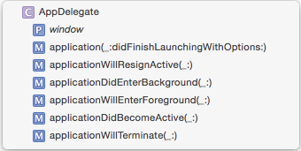

Swift Style Guide
This style guide is different from others you may see, because the focus is centered on readability for print and the web. We created this style guide to keep the code in our books, tutorials, and starter kits nice and consistent — even though we have many different authors working on the books.
Our overarching goals are conciseness, readability, and simplicity.
Writing Objective-C? Check out our Objective-C Style Guide too.
Table of Contents
- Naming
- Spacing
- Comments
- Classes and Structures
- Function Declarations
- Closure Expressions
- Types
- Control Flow
- Semicolons
- Language
- Smiley Face
- Credits
Naming
Use descriptive names with camel case for classes, methods, variables, etc. Class names should be capitalized, while method names and variables should start with a lower case letter.
Preferred:
private let maximumWidgetCount = 100
class WidgetContainer {
var widgetButton: UIButton
let widgetHeightPercentage = 0.85
}
Not Preferred:
let MAX_WIDGET_COUNT = 100
class app_widgetContainer {
var wBut: UIButton
let wHeightPct = 0.85
}
For functions and init methods, prefer named parameters for all arguments unless the context is very clear. Include external parameter names if it makes function calls more readable.
func dateFromString(dateString: String) -> NSDate
func convertPointAt(#column: Int, #row: Int) -> CGPoint
func timedAction(#delay: NSTimeInterval, perform action: SKAction) -> SKAction!
// would be called like this:
dateFromString("2014-03-14")
convertPointAt(column: 42, row: 13)
timedAction(delay: 1.0, perform: someOtherAction)
For methods, follow the standard Apple convention of referring to the first parameter in the method name:
class Guideline {
func combineWithString(incoming: String, options: Dictionary?) { ... }
func upvoteBy(amount: Int) { ... }
}
Enumerations
Use UpperCamelCase for enumeration values:
enum Shape {
case Rectangle
case Square
case Triangle
case Circle
}
Prose
When referring to functions in prose (tutorials, books, comments) include the required parameter names from the caller's perspective or _ for unnamed parameters.
Call
convertPointAt(column:row:)from your owninitimplementation.If you call
dateFromString(_:)make sure that you provide a string with the format "yyyy-MM-dd".If you call
timedAction(delay:perform:)fromviewDidLoad()remember to provide an adjusted delay value and an action to perform.You shouldn't call the data source method
tableView(_:cellForRowAtIndexPath:)directly.
When in doubt, look at how Xcode lists the method in the jump bar – our style here matches that.

Class Prefixes
Swift types are automatically namespaced by the module that contains them and you should not add a class prefix. If two names from different modules collide you can disambiguate by prefixing the type name with the module name.
import SomeModule
let myClass = MyModule.UsefulClass()
Spacing
Indent using 2 spaces rather than tabs to conserve space and help prevent line wrapping. Be sure to set this preference in Xcode as shown below:

Method braces and other braces (
if/else/switch/whileetc.) always open on the same line as the statement but close on a new line.- Tip: You can re-indent by selecting some code (or ⌘A to select all) and then Control-I (or Editor\Structure\Re-Indent in the menu). Some of the Xcode template code will have 4-space tabs hard coded, so this is a good way to fix that.
Preferred:
if user.isHappy {
// Do something
} else {
// Do something else
}
Not Preferred:
if user.isHappy
{
// Do something
}
else {
// Do something else
}
- There should be exactly one blank line between methods to aid in visual clarity and organization. Whitespace within methods should separate functionality, but having too many sections in a method often means you should refactor into several methods.
Comments
When they are needed, use comments to explain why a particular piece of code does something. Comments must be kept up-to-date or deleted.
Avoid block comments inline with code, as the code should be as self-documenting as possible. Exception: This does not apply to those comments used to generate documentation.
Classes and Structures
Which one to use?
Remember, structs have value semantics. Use structs for things that do not have an identity. An array that contains [a, b, c] is really the same as another array that contains [a, b, c] and they are completely interchangeable. It doesn't matter whether you use the first array or the second, because they represent the exact same thing. That's why arrays are structs.
Classes have reference semantics. Use classes for things that do have an identity or a specific life cycle. You would model a person as a class because two person objects are two different things. Just because two people have the same name and birthdate, doesn't mean they are the same person. But the person's birthdate would be a struct because a date of 3 March 1950 is the same as any other date object for 3 March 1950. The date itself doesn't have an identity.
Sometimes, things should be structs but need to conform to AnyObject or are historically modeled as classes already (NSDate, NSSet). Try to follow these guidelines as closely as possible.
Example definition
Here's an example of a well-styled class definition:
class Circle: Shape {
var x: Int, y: Int
var radius: Double
var diameter: Double {
get {
return radius * 2
}
set {
radius = newValue / 2
}
}
init(x: Int, y: Int, radius: Double) {
self.x = x
self.y = y
self.radius = radius
}
convenience init(x: Int, y: Int, diameter: Double) {
self.init(x: x, y: y, radius: diameter / 2)
}
func describe() -> String {
return "I am a circle at \(centerString()) with an area of \(computeArea())"
}
override func computeArea() -> Double {
return M_PI * radius * radius
}
private func centerString() -> String {
return "(\(x),\(y))"
}
}
The example above demonstrates the following style guidelines:
- Specify types for properties, variables, constants, argument declarations and other statements with a space after the colon but not before, e.g.
x: Int, andCircle: Shape. - Define multiple variables and structures on a single line if they share a common purpose / context.
- Indent getter and setter definitions and property observers.
- Don't add modifiers such as
internalwhen they're already the default. Similarly, don't repeat the access modifier when overriding a method.
Use of Self
For conciseness, avoid using self since Swift does not require it to access an object's properties or invoke its methods.
Use self when required to differentiate between property names and arguments in initializers, and when referencing properties in closure expressions (as required by the compiler):
class BoardLocation {
let row: Int, column: Int
init(row: Int, column: Int) {
self.row = row
self.column = column
let closure = {
println(self.row)
}
}
}
Protocol Conformance
When adding protocol conformance to a class, prefer adding a separate class extension for the protocol methods. This keeps the related methods grouped together with the protocol and can simplify instructions to add a protocol to a class with its associated methods.
Also, don't forget the // MARK: - comment to keep things well-organized!
Preferred:
class MyViewcontroller: UIViewController {
// class stuff here
}
// MARK: - UITableViewDataSource
extension MyViewcontroller: UITableViewDataSource {
// table view data source methods
}
// MARK: - UIScrollViewDelegate
extension MyViewcontroller: UIScrollViewDelegate {
// scroll view delegate methods
}
Not Preferred:
class MyViewcontroller: UIViewController, UITableViewDataSource, UIScrollViewDelegate {
// all methods
}
Computed Properties
For conciseness, if a computed property is read-only, omit the get clause. The get clause is required only when a set clause is provided.
Preferred:
var diameter: Double {
return radius * 2
}
Not Preferred:
var diameter: Double {
get {
return radius * 2
}
}
Function Declarations
Keep short function declarations on one line including the opening brace:
func reticulateSplines(spline: [Double]) -> Bool {
// reticulate code goes here
}
For functions with long signatures, add line breaks at appropriate points and add an extra indent on subsequent lines:
func reticulateSplines(spline: [Double], adjustmentFactor: Double,
translateConstant: Int, comment: String) -> Bool {
// reticulate code goes here
}
Closure Expressions
Use trailing closure syntax only if there's a single closure expression parameter at the end of the argument list. Give the closure parameters descriptive names.
Preferred:
UIView.animateWithDuration(1.0) {
self.myView.alpha = 0
}
UIView.animateWithDuration(1.0,
animations: {
self.myView.alpha = 0
},
completion: { finished in
self.myView.removeFromSuperview()
}
)
Not Preferred:
UIView.animateWithDuration(1.0, animations: {
self.myView.alpha = 0
})
UIView.animateWithDuration(1.0,
animations: {
self.myView.alpha = 0
}) { f in
self.myView.removeFromSuperview()
}
For single-expression closures where the context is clear, use implicit returns:
attendeeList.sort { a, b in
a > b
}
Types
Always use Swift's native types when available. Swift offers bridging to Objective-C so you can still use the full set of methods as needed.
Preferred:
let width = 120.0 // Double
let widthString = (width as NSNumber).stringValue // String
Not Preferred:
let width: NSNumber = 120.0 // NSNumber
let widthString: NSString = width.stringValue // NSString
In Sprite Kit code, use CGFloat if it makes the code more succinct by avoiding too many conversions.
Constants
Constants are defined using the let keyword, and variables with the var keyword. Always use let instead of var if the value of the variable will not change.
Tip: A good technique is to define everything using let and only change it to var if the compiler complains!
Optionals
Declare variables and function return types as optional with ? where a nil value is acceptable.
Use implicitly unwrapped types declared with ! only for instance variables that you know will be initialized later before use, such as subviews that will be set up in viewDidLoad.
When accessing an optional value, use optional chaining if the value is only accessed once or if there are many optionals in the chain:
self.textContainer?.textLabel?.setNeedsDisplay()
Use optional binding when it's more convenient to unwrap once and perform multiple operations:
if let textContainer = self.textContainer {
// do many things with textContainer
}
When naming optional variables and properties, avoid naming them like optionalString or maybeView since their optional-ness is already in the type declaration.
For optional binding, shadow the original name when appropriate rather than using names like unwrappedView or actualLabel.
Preferred:
var subview: UIView?
var volume: Double?
// later on...
if let subview = subview, volume = volume {
// do something with unwrapped subview and volume
}
Not Preferred:
var optionalSubview: UIView?
var volume: Double?
if let unwrappedSubview = optionalSubview {
if let realVolume = volume {
// do something with unwrappedSubview and realVolume
}
}
Struct Initializers
Use the native Swift struct initializers rather than the legacy CGGeometry constructors.
Preferred:
let bounds = CGRect(x: 40, y: 20, width: 120, height: 80)
let centerPoint = CGPoint(x: 96, y: 42)
Not Preferred:
let bounds = CGRectMake(40, 20, 120, 80)
let centerPoint = CGPointMake(96, 42)
Prefer the struct-scope constants CGRect.infiniteRect, CGRect.nullRect, etc. over global constants CGRectInfinite, CGRectNull, etc. For existing variables, you can use the shorter .zeroRect.
Type Inference
Prefer compact code and let the compiler infer the type for a constant or variable, unless you need a specific type other than the default such as CGFloat or Int16.
Preferred:
let message = "Click the button"
let currentBounds = computeViewBounds()
var names = [String]()
let maximumWidth: CGFloat = 106.5
Not Preferred:
let message: String = "Click the button"
let currentBounds: CGRect = computeViewBounds()
var names: [String] = []
NOTE: Following this guideline means picking descriptive names is even more important than before.
Syntactic Sugar
Prefer the shortcut versions of type declarations over the full generics syntax.
Preferred:
var deviceModels: [String]
var employees: [Int: String]
var faxNumber: Int?
Not Preferred:
var deviceModels: Array<String>
var employees: Dictionary<Int, String>
var faxNumber: Optional<Int>
Control Flow
Prefer the for-in style of for loop over the for-condition-increment style.
Preferred:
for _ in 0..<3 {
println("Hello three times")
}
for (index, person) in enumerate(attendeeList) {
println("\(person) is at position #\(index)")
}
Not Preferred:
for var i = 0; i < 3; i++ {
println("Hello three times")
}
for var i = 0; i < attendeeList.count; i++ {
let person = attendeeList[i]
println("\(person) is at position #\(i)")
}
Semicolons
Swift does not require a semicolon after each statement in your code. They are only required if you wish to combine multiple statements on a single line.
Do not write multiple statements on a single line separated with semicolons.
The only exception to this rule is the for-conditional-increment construct, which requires semicolons. However, alternative for-in constructs should be used where possible.
Preferred:
let swift = "not a scripting language"
Not Preferred:
let swift = "not a scripting language";
NOTE: Swift is very different to JavaScript, where omitting semicolons is generally considered unsafe
Language
Use US English spelling to match Apple's API.
Preferred:
let color = "red"
Not Preferred:
let colour = "red"
Smiley Face
Smiley faces are a very prominent style feature of the raywenderlich.com site! It is very important to have the correct smile signifying the immense amount of happiness and excitement for the coding topic. The closing square bracket ] is used because it represents the largest smile able to be captured using ASCII art. A closing parenthesis ) creates a half-hearted smile, and thus is not preferred.
Preferred:
:]
Not Preferred:
:)
Credits and sources
This style guide is a collaborative effort from the most stylish raywenderlich.com team members:
- Jawwad Ahmad
- Soheil Moayedi Azarpour
- Scott Berrevoets
- Eric Cerney
- Sam Davies
- Evan Dekhayser
- Jean-Pierre Distler
- Colin Eberhardt
- Greg Heo
- Matthijs Hollemans
- Erik Kerber
- Christopher LaPollo
- Ben Morrow
- Andy Pereira
- Ryan Nystrom
- Cesare Rocchi
- Ellen Shapiro
- Marin Todorov
- Chris Wagner
- Ray Wenderlich
- Jack Wu
Hat tip to Nicholas Waynik and the Objective-C Style Guide team!
We also drew inspiration from Apple’s reference material on Swift:
- The Swift Programming Language
- Using Swift with Cocoa and Objective-C
- Swift Standard Library Reference
--> SOURCES <--